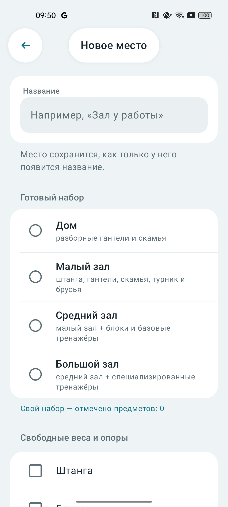
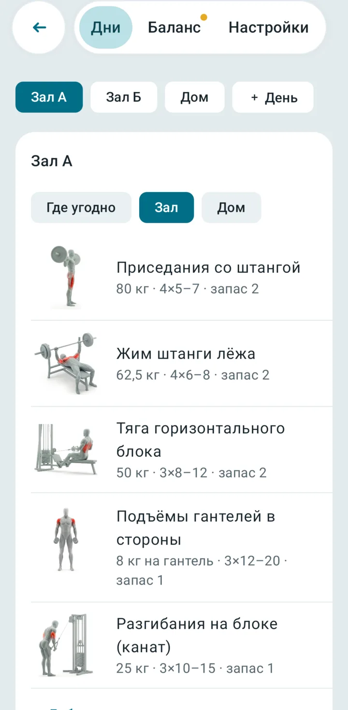
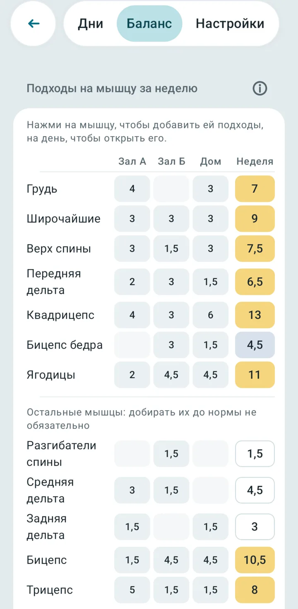
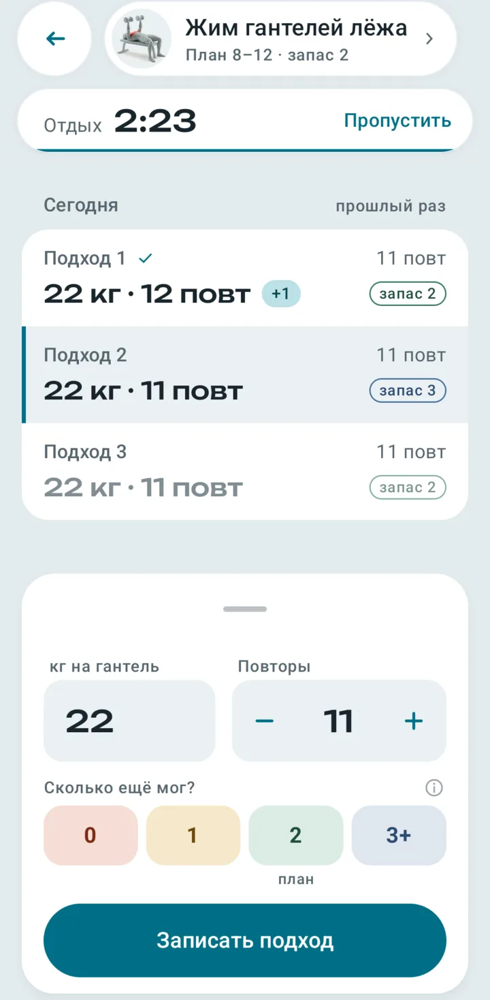
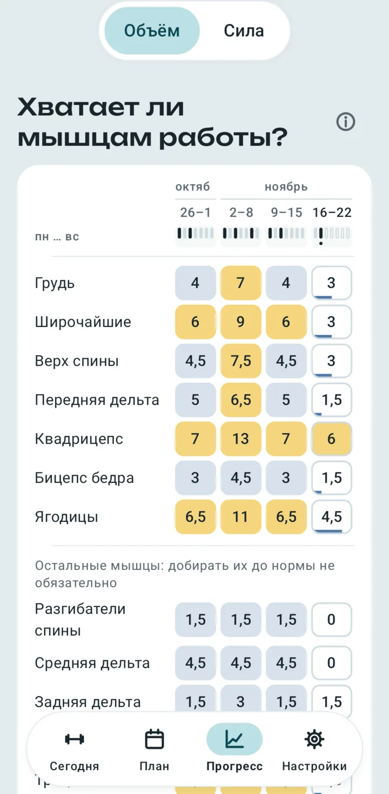

Как пользоваться Печорой
Разберём на примере: две тренировки в зале и одна дома. Настроим места, составим план, запишем тренировки и посмотрим, что получилось.
Это пример работы с приложением, а не готовая программа тренировок. Упражнения, веса и количество подходов подбирайте под свой опыт, оборудование и самочувствие. Скриншоты сделаны в приложении на демонстрационном дневнике; цифры на них служат только примером.
Добавляем зал и дом
Допустим, в зале у вас есть штанга, гантели и тренажёры, а дома — гантели и скамья. Создадим два места, чтобы при составлении плана было видно, какое оборудование доступно в каждый день.

- Откройте «Настройки» → «Места» → «Добавить место».
- Введите название, например «Зал». Место сохранится, как только появится название.
- Выберите подходящий готовый набор — например, «Средний зал». Прокрутите список ниже и отметьте то, что есть на самом деле. Если какого-то тренажёра нет, снимите отметку.
- Вернитесь к списку мест и таким же образом добавьте «Дом». Можно начать с набора «Дом», а затем поправить его.
- Если используете диски и грифы, укажите их в разделе свободных весов. Если занимаетесь с эспандерами, откройте «Мои эспандеры» и настройте набор от лёгкого к тяжёлому.
Место не привязывает вас к адресу. Это описание оборудования: оно пригодится при проверке плана и подборе замен.
Создаём программу на три дня
Теперь соберём программу: два разных дня в зале и один дома. Назовём их «Зал А», «Зал Б» и «Дом». Это дни программы, а не жёсткая привязка к понедельнику или среде: вы проходите их по порядку.

- Откройте вкладку «План» и нажмите «Создать программу». Приложение спросит, с чего начать.
- Если не хотите собирать план сами, выберите «Подобрать под меня» и укажите, сколько раз в неделю тренируетесь. Приложение предложит, как делить дни, и сразу покажет план; цель, место и опыт можно поменять там же. Чтобы упражнения выбрать самому, переключитесь на «Составлю сам»: останутся только дни с местами.
- Для нашего примера соберём программу вручную: выберите «Пустая программа». В редакторе откройте «Настройки», назовите программу, например «Зал и дом», и выберите цель. Цель вместе с опытом задаёт норму подходов на мышцу.
- Вернитесь в «Дни». Создайте три дня кнопкой «+ День», задайте им названия и выберите место: для первых двух — «Зал», для третьего — «Дом».
- В каждом дне добавьте упражнения из каталога. В домашний день выбирайте упражнения, для которых есть оборудование дома. Если приложение указывает, что оборудование недоступно, проверьте место или подберите замену.
- Откройте упражнение в плане и задайте цели: количество подходов, диапазон повторов, вес и запас повторов. Если рабочий вес пока неизвестен, его можно подобрать во время тренировки.
Что означают цели подходов
Например, запись 3 × 8–12 означает три подхода, в каждом из которых вы планируете выполнить от восьми до двенадцати повторов. Если указать запас 2, ориентир — закончить подход с ощущением, что вы могли бы сделать ещё примерно два повтора. Это оценка, а не измерение с точностью до повтора.
Для примера можно начать с нескольких знакомых движений на ноги, жим и тягу в каждый день, используя доступное оборудование. Не обязательно сразу заполнять весь план: добавьте упражнения и цели, которые понимаете, затем проверьте баланс.
Когда прибавлять вес
Настраивать ничего не нужно: прогрессия одна для всех упражнений. Сначала растут повторы внутри диапазона, затем вес. Например, для 3 × 8–12 вы постепенно доходите до 12 повторов во всех подходах, и тогда приложение предлагает прибавить вес. После тренировки прибавка сама попадает в план.
Проверяем баланс
В редакторе программы откройте вкладку «Баланс». Она отвечает на вопрос: что получат мышцы, если пройти все дни этого плана за неделю? В нашем примере — оба дня зала и домашний день.

В таблице видно, сколько подходов получает каждая мышца в каждый день и за неделю. Главной мышце упражнения засчитывается целый подход, помогающей — половина. Поэтому число может быть дробным: например, 4,5. Медовая ячейка недели значит, что мышца в норме для вашей цели и опыта; серо-голубая — что подходов меньше нормы.
Что делать с результатом
- Если для важной вам мышцы показано мало, нажмите на неё: приложение предложит, куда добавить подходы.
- Если показано слишком много, нажмите на день и посмотрите, какие упражнения дают этой мышце нагрузку. Возможно, стоит убрать часть подходов или перенести их в другой день.
- Если приложение заметило, что в плане стоит поправить, на вкладке «Баланс» горит точка, а замечания собраны в одной карточке.
- Вернитесь в «Баланс» после изменений: расчёт обновляется.
Не нужно подгонять каждую строку под идеальную отметку. Норма зависит от цели и опыта и не знает всего о вашем восстановлении. Остальные мышцы, ниже черты, добирать до нормы не обязательно.
План и факт — разные вещи. Если за неделю вы успели только два дня из трёх, фактической работы будет меньше, чем показано в балансе. Посмотреть выполненное можно во вкладке «Прогресс».
Тренируемся и ведём дневник
Когда программа готова и выбрана активной, откройте «Сегодня». Приложение покажет очередной день. В нашем примере это может быть «Зал А».

- Нажмите «Начать по плану». Если хотите провести другую тренировку, можно выбрать «Без плана».
- Откройте первое упражнение. Перед рабочими подходами выполните нужную разминку; настройки разминочных подходов и таймера находятся в «Настройки» → «Тренировки».
- Вес и повторы уже подсказаны: по лучшей из двух прошлых тренировок и на повтор больше. После подхода поправьте числа, если сделали иначе, и отметьте, сколько ещё могли: 0, 1, 2 или 3+. Например, план был 3 × 8–12, а подход получился 10 повторов — запишите 10.
- Отдохните, выполните остальные подходы и запишите каждый. Если подход вышел заметно тяжелее плана, под следующим появится другой вес: его можно взять одним нажатием или оставить прежний.
- Приложение учитывает тип нагрузки: для гантелей записывается вес одной гантели, для эспандера выбирается сам эспандер. Если упражнение недоступно, подберите замену. По названию упражнения открывается его страница с роликом, описанием и историей.
- Завершите тренировку. Итоги покажут каждое упражнение и сколько осталось до прибавки. В следующий раз на «Сегодня» появится следующий день активной программы.
Записывайте фактические результаты, даже если они отличаются от плана. Именно они составят историю и попадут в расчёты прогресса.
Смотрим, что получилось
После нескольких недель откройте вкладку «Прогресс». Здесь есть два раздела: «Объём» и «Сила». Они отвечают на разные вопросы: сколько работы было выполнено и как менялись результаты упражнений. У каждого раздела есть значок «i» с объяснением, как посчитаны числа.

Объём: хватает ли мышцам работы?
Таблица показывает последние четыре календарные недели, с понедельника по воскресенье. В ячейке — число тяжёлых подходов на мышцу за неделю: учитываются подходы с отмеченным запасом не больше четырёх повторов. Главная мышца получает целый подход, помогающая — половину. Медовая ячейка значит, что неделя в норме для вашей цели и опыта.
Допустим, по плану у мышцы должно было быть шесть подходов в неделю, а ячейки остаются серо-голубыми. Сначала проверьте, сколько тренировок вы провели: если домашний день часто пропускался, причина может быть в этом. Если тренировки были, проверьте записи подходов и отметки запаса.
Если нагрузка регулярно получается заметно меньше запланированной, подумайте, реалистичен ли график. Если регулярно слишком большая и вы не успеваете восстанавливаться, посмотрите, что можно сократить. Норма — ориентир, а не обязательство.
Сила: растёте ли вы?
Переключитесь на «Сила». Здесь последние восемь недель по каждому упражнению: в ячейке лучший рабочий подход недели, вес сверху, повторы снизу. Если цветные ячейки идут лесенкой, вы растёте: выделен вес или повторы, смотря что прибавилось. Точкой отмечен рекорд. Справа написано, что изменилось за восемь недель. Нажмите на упражнение, чтобы открыть историю: график рабочего веса рядом с расчётным максимумом и все подходы.
Расчётный максимум — приблизительная оценка того, сколько вы подняли бы один раз, по весу, повторам и запасу. Это не вес, который вы действительно поднимали. Для вывода о росте нужно не меньше трёх тренировок упражнения; если данных мало, продолжайте записывать подходы.
Если строка несколько недель подряд остаётся серой, упражнение застряло. На вкладке «План» появится точка, а в разделе «Решения» — что можно сделать: поставить упражнение раньше в тренировке, снизить вес, заменить его или оставить как есть. Решаете вы. Не делайте вывод по одной удачной или неудачной тренировке.
Сохраняем копию
Дневник хранится на устройстве. В «Настройки» → «Данные» можно экспортировать его в JSON, импортировать из файла, настроить копирование в папку на устройстве или подключить Google Диск. Инструкции по восстановлению и отключению Диска — на странице поддержки.